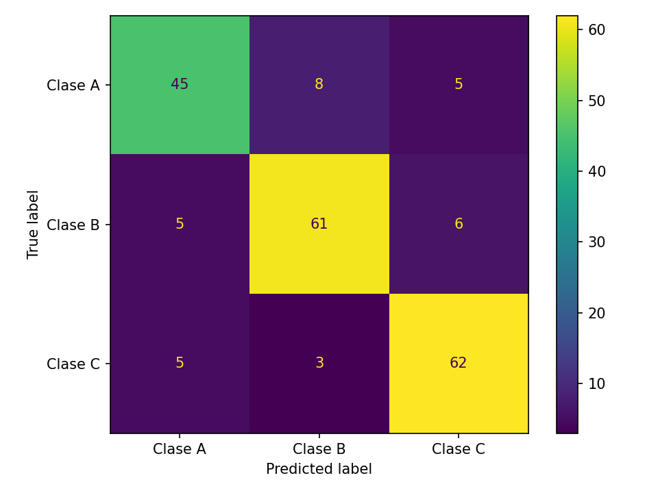
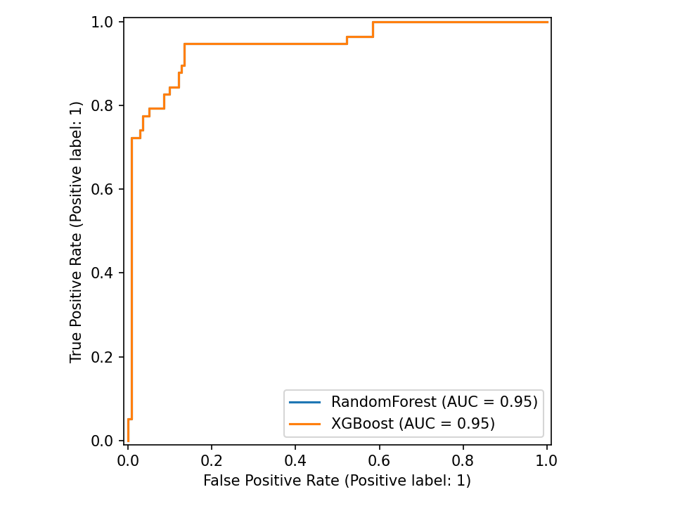
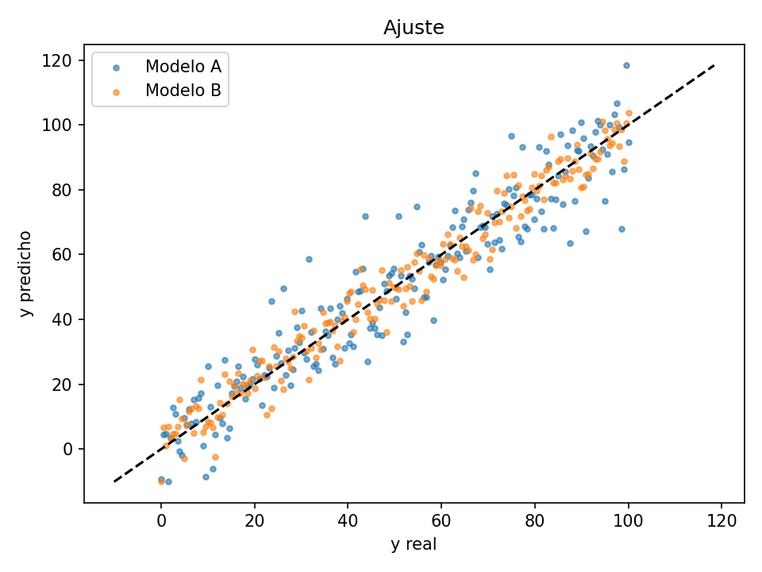

evalcards





evalcards es una librería para Python que genera reportes de evaluación para modelos supervisados en Markdown, con métricas y gráficos listos para usar en informes. Soporta:
- Clasificación: binaria y multiclase (OvR) con métricas como accuracy, balanced_accuracy, mcc, log_loss (si hay probabilidades), roc_auc/pr_auc, además de curvas ROC/PR por clase.
- Regresión: MAE, MSE, RMSE, R², MedAE, MAPE, RMSLE.
- Forecasting (series de tiempo): MAE, MSE, RMSE, MedAE, MAPE, RMSLE, sMAPE (%) y MASE.
- Clasificación multi-label: matriz de confusión y curvas ROC/PR por etiqueta si se pasan probabilidades.
- Export JSON métricas y rutas de imágenes para integración en pipelines (nuevo en v0.2.11).
Instalación
pip install evalcards
Uso rápido (Python)
from evalcards import make_report
# y_true: etiquetas/valores reales
# y_pred: etiquetas/valores predichos
# y_proba (opcional):
# - binaria: vector 1D con prob. de la clase positiva
# - multiclase: matriz (n_samples, n_classes) con prob. por clase
# - multi-label: matriz (n_samples, n_labels) con prob. por etiqueta
path = make_report(
y_true, y_pred,
y_proba=proba, # opcional
path="reporte.md", # nombre del archivo Markdown
title="Mi modelo" # título del reporte
)
print(path) # ruta del reporte generado
Qué evalúa
-
Clasificación (binaria/multiclase/multi-label) Métricas:
accuracy,precision/recall/F1(macro/weighted),balanced_accuracy,mcc,log_loss(si hay probabilidades). AUC / AUPRC:roc_aucypr_auc(binaria),roc_auc_ovr_macroypr_auc_macro(multiclase),roc_auc_macro(multi-label). Gráficos: matriz de confusión, ROC y PR (por clase en multiclase, por etiqueta en multi-label). -
Regresión Métricas:
MAE,MSE,RMSE,R²,MedAE,MAPE,RMSLE. Gráficos: Ajuste (y vs ŷ) y Residuales. -
Forecasting Métricas:
MAE,MSE,RMSE,MedAE,MAPE,RMSLE, sMAPE (%), MASE. Parámetros extra:season(p.ej. 12) einsample(serie de entrenamiento para MASE). Gráficos: Ajuste y Residuales.
Ejemplos
1) Clasificación binaria (scikit-learn)
from sklearn.datasets import make_classification
from sklearn.linear_model import LogisticRegression
from sklearn.model_selection import train_test_split
from evalcards import make_report
X, y = make_classification(n_samples=600, n_features=10, random_state=0)
X_tr, X_te, y_tr, y_te = train_test_split(X, y, test_size=0.3, random_state=0)
clf = LogisticRegression(max_iter=1000).fit(X_tr, y_tr)
y_pred = clf.predict(X_te)
proba = clf.predict_proba(X_te)[:, 1]
make_report(y_te, y_pred, y_proba=proba, path="rep_bin.md", title="Clasificación binaria")
2) Multiclase (OvR)
from sklearn.datasets import load_iris
from sklearn.ensemble import RandomForestClassifier
@@ -107,51 +107,51 @@ X, y = make_multilabel_classification(n_samples=300, n_features=12, n_classes=4,
clf = MultiOutputClassifier(LogisticRegression(max_iter=1000)).fit(X, y)
y_pred = clf.predict(X)
# Probabilidad por etiqueta (matriz n_samples x n_labels)
y_proba = np.stack([m.predict_proba(X)[:,1] for m in clf.estimators_], axis=1)
make_report(y, y_pred, y_proba=y_proba, path="rep_multilabel.md", title="Multi-label Example", lang="en",
labels=[f"Tag_{i}" for i in range(y.shape[1])])
4) Regresión
from sklearn.datasets import make_regression
from sklearn.ensemble import RandomForestRegressor
from sklearn.model_selection import train_test_split
from evalcards import make_report
X, y = make_regression(n_samples=600, n_features=8, noise=10, random_state=0)
X_tr, X_te, y_tr, y_te = train_test_split(X, y, test_size=0.3, random_state=0)
reg = RandomForestRegressor(random_state=0).fit(X_tr, y_tr)
y_pred = reg.predict(X_te)
make_report(y_te, y_pred, path="rep_reg.md", title="Regresión")
5) Forecasting (sMAPE/MASE + métricas extra)
import numpy as np
from evalcards import make_report
rng = np.random.default_rng(0)
t = np.arange(360)
y = 10 + 0.05*t + 5*np.sin(2*np.pi*t/12) + rng.normal(0,1,360)
y_train, y_test = y[:300], y[300:]
y_hat = y_test + rng.normal(0, 1.2, y_test.size) # predicción de ejemplo
make_report(
y_test, y_hat,
task="forecast", season=12, insample=y_train,
path="rep_forecast.md", title="Forecast"
)
6) Comparación Multi-Modelo (Nuevo en v0.3.0)
from evalcards import make_report
# Puedes pasar un diccionario con los nombres de tus modelos y sus predicciones
y_preds = {"Random Forest": y_pred_rf, "XGBoost": y_pred_xgb}
y_probas = {"Random Forest": proba_rf, "XGBoost": proba_xgb}
# Generará curvas conjuntas y tablas comparativas en el mismo reporte HTML/Markdown
make_report(y_te, y_preds, y_proba=y_probas, path="rep_multi.html", fmt="html", title="Comparativa")
7) Análisis de Equidad (Fairness & Bias)
# Mide el rendimiento por subgrupo demográfico, de cliente, etc.
grupos = ["Joven", "Adulto", "Adulto", "Joven", ...]
make_report(y_te, y_pred, sensitive_features=grupos, title="Reporte de Equidad")
8) Tareas de Ranking (NDCG)
# Para sistemas de búsqueda o recomendación
make_report(y_te, y_pred, task="ranking", query_id=user_ids, title="Resultados de Búsqueda")
Configuración y Formatos
- .evalcards.toml: Si creas un archivo
.evalcards.tomlen tu directorio,evalcardsusará sus parámetros por defecto (útil para la CLI).toml [evalcards] outdir = "reportes_diarios" lang = "es" format = "html" - Formatos Rápidos (CLI): Puedes usar archivos
.parquety.featherdirectamente en los argumentos--y_true,--y_predy--probapara cargar millones de registros rápidamente.
Salidas y PATH
- Un archivo Markdown con las métricas y referencias a imágenes generadas.
- Imágenes PNG (según el tipo de tarea):
- Clasificación binaria:
confusion.png(matriz de confusión global)roc.png(curva ROC)pr.png(curva Precision-Recall)
- Clasificación multiclase (OvR):
confusion.png(matriz de confusión global)roc_class_<clase>.png(curva ROC para cada clase, One-vs-Rest)pr_class_<clase>.png(curva PR para cada clase)
- Clasificación multi-label:
confusion_<etiqueta>.png(matriz de confusión para cada etiqueta)roc_label_<etiqueta>.png(curva ROC para cada etiqueta, si se pasan probabilidades)pr_label_<etiqueta>.png(curva PR para cada etiqueta, si se pasan probabilidades)
-
Regresión / Forecasting:
fit.png(dispersión y vs ŷ, ajuste del modelo)resid.png(gráfico de residuales)
-
Ubicación de archivos:
- Por defecto, los archivos se guardan en la carpeta
./evalcards_reports/sipathno incluye ruta. -
Puedes cambiar la carpeta con el argumento
out_diro usando una ruta enpath. -
Export JSON (opcional):
Si usas el parámetroexport_json, también se genera un archivo.jsoncon las métricas y los nombres/rutas de los PNG generados. -
Ejemplo de nombres multi-label:
Si usaslabels=["A","B","C"], los archivos serán: confusion_A.png,roc_label_A.png,pr_label_A.pngconfusion_B.png,roc_label_B.png,pr_label_B.png-
etc.
-
JSON (opcional): contiene
metrics,chartsymarkdown.
Entradas esperadas (formas comunes)
- Clasificación
y_true: enteros 0..K-1 (o etiquetas string).y_pred: del mismo tipo/espacio de clases quey_true.y_proba(opcional):- Binaria: vector 1D con prob. de la clase positiva.
- Multiclase: matriz
(n_samples, n_classes)con una columna por clase (mismo orden que tu modelo). - Multi-label: matriz
(n_samples, n_labels)con una columna por etiqueta (proba de pertenecer).
- Regresión / Forecast
y_true,y_pred: arrays 1D de floats.insample(forecast): serie de entrenamiento para MASE;seasonsegún la estacionalidad (ej. 12 mensual/anual).
Compatibilidad de modelos
Funciona con cualquier modelo que produzca predict (y opcionalmente predict_proba):
- scikit-learn, XGBoost/LightGBM/CatBoost, statsmodels, Prophet/NeuralProphet, Keras/PyTorch.
- Multiclase: y_proba como matriz (una columna por clase) y labels para nombres.
Roadmap
v0.3 — Salida y métricas clave
- [x] Reporte HTML autocontenido (
format="md|html|both") - [x] Export JSON** de métricas/paths (
--export-json) - [x] Métricas nuevas (clasificación): AUPRC, Balanced Accuracy, MCC, Log Loss, Brier Score
- [x] Métricas nuevas (regresión): MAPE, MedAE, RMSLE
v0.4 — Multiclase y umbrales
- [x] Análisis de umbral (curvas precisión–recobrado–F1 vs umbral)
- [ ] ROC/PR micro & macro (multiclase) +
roc_auc_macro,average_precision_macro - [ ] Matriz de confusión normalizada (global y por clase)
v0.5 — Probabilidades y comparación
- [x] Calibración: Brier score + curva de confiabilidad (Reliability Curve)
- [x] Comparación multi-modelo en un único reporte (pasa dict a y_pred/y_proba)
- [x] Gráficos interactivos HTML con Plotly
- [x] Análisis de Sesgo (Fairness & Bias) con
sensitive_features - [x] Insights automáticos para destacar hallazgos clave
- [x] Tareas de Ranking (NDCG) con
query_id
v0.6 — DX, formatos y docs
- [x] Nuevos formatos de entrada: Parquet/Feather desde CLI
- [x] Config de proyecto (
.evalcards.toml) para defaults (outdir, format, lang) - [x] Plantillas/temas Jinja2 (branding base ya integrado en Markdown y HTML)
- [x] Docs con MkDocs + GitHub Pages (guía, API, ejemplos ejecutables)
Ideas
- [x] Soporte multi-label (completado)
- [ ] Métricas de ranking (MAP/NDCG)
- [ ] Curvas de calibración por bins configurables
- [ ] QQ-plot e histograma de residuales (regresión)
- [x] i18n ES/EN (completado)
Documentación
Guía | Referencia de API | Changelog
Licencia
MIT
Autor
Ricardo Urdaneta